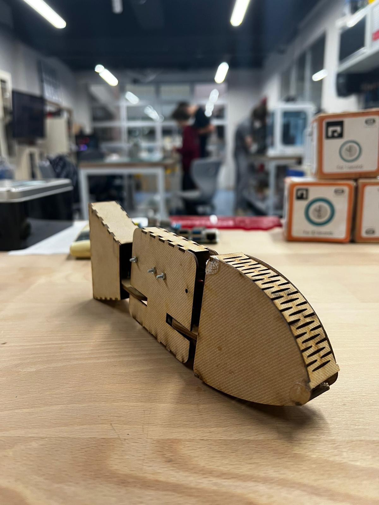
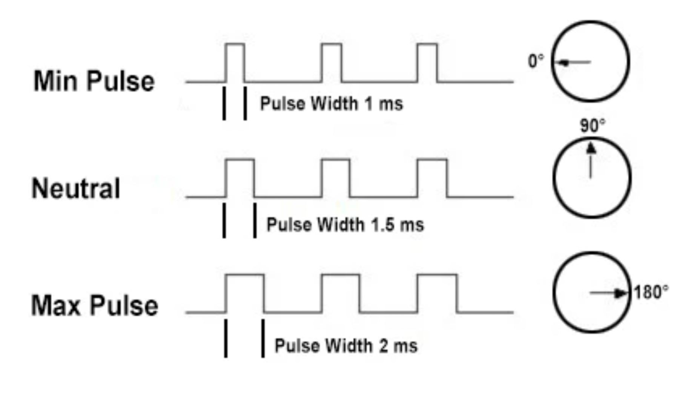
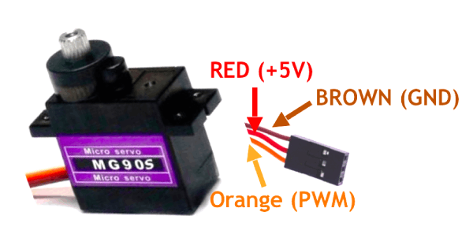

Here is how to put together your first model!
Welcome to Lime!
Lime is the first level available in the Lemon Robotics Kit. To build it, make sure you have all the elements required (learn more about these in the prerequisites segment) and follow the steps below!
Start Now: Build Lime
Assemble the Kraftplex Body & Learn About 3D Design
1) Assembling the Head and the Tail
In this document you will learn how to put togethr the tail of the fish. You will need a glue and the images to complete this step.
Pro tip: make sure to check the video above to see how everything is done!
Firstly, Stick the "T" shaped wooden components to the spots where the sign "T" appears as shadows. Make certain that it is properly attached. (Be sure to wait 30 seconds after gluing the parts together.) After that, let's put these pieces together, make sure that every part of the product is in the right spot.
Finally, once you've properly constructed it, carefully glue it together.


Now, you will learn how to assemble the head.
Stick the "T" shaped wooden components to the spots where the sign "T" appears as shadows. Make certain that it is properly attached, just like you did in the tail.
Stretch the two zigzag-like parts out carefully without applying much physical force.
After stretching it out, begin building it up as seen in the video. (Check that "T" staring through the inside) While building, apply the long item to the section where the head is longer. Don't forget to glue on a continuous and attentive basis while you're building.

-
2) Main Body
First, get two of each item that is shown in the video.
Connect the rising part of the black piece with the round board and close the other piece on it carefully. Examine the video carefully for the complete process. (Repeat this step again with the remaining pieces.)
Second, gather these pieces with glue to complete the fish's main body.
Examine the video to stick them together. (Be sure to stick them evenly.)
Place your screws in the second and third holes, and use nuts to secure them.
Get the parts from the first step as well as these items.
Make sure the servo is positioned on the rising section of the black piece. After assembling, use the short screw to link them. Examine the picture for the process.(Repeat this step again with the remaining pieces.)
Place the servos in the body's downward position, as shown in the video.
Insert your screws into the final two holes and secure them with nuts. Check that the servos are still in their proper places. (They shouldn't move) The final look should look like this.
Finally, we'll connect the tail and head to the body.
Fixate the pieces with the connectors shape, as shown in the model.
The final product should look like this.
Congratulations! Now that the fish's modeling is complete, let's move on to the electronics.

Start your electronics!
3)Learning Servos With “Lime”
The robot fish Lime has very little electronic involvement, boasting only two servos to control. Therefore it’s a perfect stepping stone for the other robots in this kit, Satsuma, and Lemon. But before we start, you must understand the fundamental concept on which servo motors work: PWM.
Pulse Width Modulation (PWM), is the main way we communicate with servos. This method involves sending different widths of electrical pulse to the device through the control wire, aka the GP pins for the pico. A servo motor can usually only turn 90° in either direction for a total of 180° movement.
The motor's neutral position is defined as the position where the servo has the same amount of potential rotation in the both the clockwise or counter-clockwise direction. The PWM sent to the motor determines position of the shaft, and based on the duration of the pulse sent via the control wire; the rotor will turn to the desired position.
The servo motor expects to see a pulse every 20 milliseconds (ms) and the length of the pulse will determine how far the motor turns. For example, a 1.5ms pulse will make the motor turn to the 90° position. Shorter than 1.5ms moves it in the counter clockwise direction toward the 0° position, and any longer than 1.5ms will turn the servo in a clockwise direction toward the 180° position.

Now that we know how servo motors work, let’s actually connect some to our pico. As you can see from the robot in front of you, servo motors have 3 colored cables conjoined together. The colors of these cables are what we use to see the function of each one of them. For the servo motors we will be using, the tower pro mg90s, the black cable represents a ground connection, the red cable represents a power connection, and the yellow/orange cable is the PWM connection.
But we can’t connect these cables outright since none of these 3 ports are adjacent to each other on the Pico, so we will need to connect additional jumper cables to get it to work.

When working on these kits, we will be using the standard cable denominations of Male Male (MM), Female Female (FF), and Male Female (MF). A male cable is a cable that has a connecting tip while a female cable does not, and has a hollow input point. While connecting our servos to the pico we will be using MF jumper cables. Attach each cable to the according pins:
1st servo:
GND cable to pin 3
Power cable to Vbus on pin 40
Input cable to pin 1
2nd servo:
GND cable to pin 38
Power cable to Vbus on pin 39
Input cable to pin 2
After you’ve connected the servos to the pico it should look like this diagram:
4)Learning To Code With “Lime”
Next let’s move on to programming. To start coding open up the Mu editor and open the code.py file installed on the pico. This will be the file we will be working on since it is the default file curcuitpython uses when executing code. When you open it you will only see a single line written that has print(“Hello World”) on it.
When you first open Mu, your window might have the serial console open as it is in the image above. The serial console is not open by default so we need to open it through serial button in the button bar. The serial console is important because it helps us keep track of the state and outputs of the pico. When you first open serial you will see a message written on the screen saying that auto reload is on.
What this means is that curcuitpython right now is on it’s default mode where either when the pico first receives power or when the code.py file is saved - by pressing the save button, the code.py file will be automatically executed. This is the default mode of curcuitpython operated microcontrollers, however by pressing a key in the serial console window we will be redirected to the Read-Evaluate-Print-Loop (REPL).
After entering the REPL the auto-reload function will be turned off and you will be prompted to enter commands by the three chevrons (>>>). The REPL will only accept one line of code at a time so although it isn’t good for longer pieces of code, it is a perfect environment to test smaller sets of commands and debug your code. To test this out let’s write a simple print command into the REPL:
>>> print("Hello World")
Hello World
As you can see we received an immediate followup to the command we entered. To exit the REPL, you need to press Ctrl + D which will return curcuitpython to the auto-reload mode and run code.py as well. Now that we know some of the intricacies of curcuitpython and the Mu editor, let’s start programming for Lime.
First let’s import some of the libraries we will be using. You may remember that the ones with the adafruit prefix are the ones we downloaded externally. These are libraries that are developed specifically for curcuitpython and adafruit components so they will come in very handy during our development.
import time
import board
import pwmio
from adafruit_motor import servo
Next, for our servos to receive pwm inputs, we need to configure a PWMOut object based on where our input pin on the servo is located. The PWMOut object has three arguments we need to enter being the digital address of our input pin, the initial duty cycle, and the frequency at which the pwm pin will operate. So in this instance we have made objects of our pwm output channels based on the pins 1, and 2, cycled the pin to with 50% duty cycle (half of 2 ** 16) at 50hz.
pwm1 = pwmio.PWMOut(board.GP5, duty_cycle=2 ** 15, frequency=50)
pwm2 = pwmio.PWMOut(board.GP6, duty_cycle=2 ** 15, frequency=50)
Next we create servo objects from the adafruit library so that we can control the servos. Normally without the use of this library we would have to convert pwm data to other forms such as angles to make our calculations, however this library conveniently gives us many tools, such as the aforementioned conversion tool, that will speed up the development of our projects!
my_servo1 = servo.Servo(pwm1)
my_servo2 = servo.Servo(pwm2)
Finally we need to write some code so that the servos of the fish will move in a continuous motion that resembles flopping. To accomplish this we have decided that an infinite loop of large rotations is the most suitable since just like fish flopping lime will make a motion similar to the erratic nature of flopping. Just as we mentioned before instead of having to use pwm values to communicate with the servo we can use familiar system of geometrical angles instead.
while True:
for angle in range:(0, 180, 5): # 0 - 180 degrees, 5 degrees at a time.
my_servo1.angle = angle
my_servo2.angle = angle
print(angle)
time.sleep(0.05)
for angle in range(180, 0, -5): # 180 - 0 degrees, 5 degrees at a time.
my_servo1.angle = angle
my_servo2.angle = angle
print(angle)
time.sleep(0.05)
When you run this code you should see your lime robot moving in a fast and continuous motion. If your robot
does not move, please check your wiring as there is nothing wrong with the code.